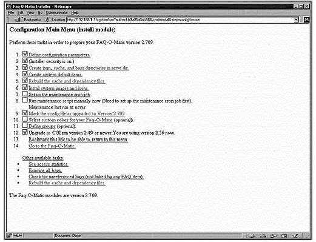
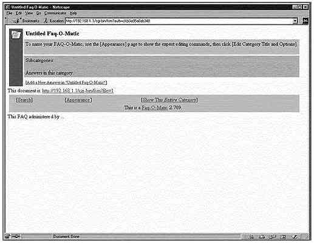

Глава 20 Опциональные компоненты устанавливаемые с веб-сервером Apache
- FAQ-O-MaticВ этой главе
Webalizer
Конфигурации
Информирование
Apache о выходном каталоге Webalizer
Запуск
Webalizer вручную в первый раз
Запуск
Webalizer автоматически при помощи cron
FAQ-O-Matic
Информирование
Apache о месте расположения файлов Faq-O-Matic
Настройка
FAQ-O-Matic
Webmail
IMP
Установка
PHPLib который требуется программе Horde из Webmail IMP
Настройка и
создани SQLе базы данных Webmail IMP
Настройка
вашего конфигурационного файла "php.ini" из PHP4
Настройка
Apache на работу с Webmail IMP
Настройка
Webmail IMP из вашего веб-броузера
|
 |
Краткий обзор
Как написано на веб сервере Faq-O-Matic:
Архивы списков рассылки это очень хорошо, потому что позволяют
внимательным людям с Часто Задаваемыми Вопросами найти на них немедленно ответы,
не беспокоя при этом других людей. К сожалению ответы в списках рассылки через
некоторое время устаревают, дезорганизованы и приходится интенсивно поработать,
чтобы отсеять их от разного "мусора". Список Часто Задаваемых Вопросов (FAQ)
лучше, потому, что даже ленивые люди могут легко находить в них ответы. К
сожалению, поддержка списка FAQ требует усилий; если им не заниматься, то
информация в нем устаревает. Faq-O-Matic - это система, базирующаяся на CGI,
автоматизирующая процесс поддержки FAQ (списка Часто Задаваемых Вопросов). Она
позволяет пользователям вашего FAQ принимать участие в его формировании. Система
разрешений также делает FAQ-O-Matic полезным как приложение "справочный стол",
база отслеживания ошибок и документационная система.
Эти инструкции предполагают.
Unix-совместимые
команды.
Путь к исходным кодам "/var/tmp" (возможны другие
варианты).
Инсталляция была проверена на Red Hat Linux 6.1 и 6.2.
Все шаги
инсталляции осуществляются суперпользователем "root".
FAQ-O-Matic версии
2.709
Пакеты.
Домашняя страница FAQ-O-Matic: http://www.dartmouth.edu/~jonh/ff-serve/cache/1.html
Наиболее
свежая версия FAQ-O-Matic всегда доступна с
ftp://ftp.cs.dartmouth.edu/pub/jonh.
Вы должны скачать:
FAQ-OMatic-2.709.tar.gz
Предварительные требования
- Веб сервер должен быть уже установлен до начала использования FAQ-O-Matic.
- Система контроля версий (RCS) должна быть также уже установлена до
использования FAQ-O-Matic.
Чтобы проверить, установлен ли пакет RCS на вашей системе
используйте команду:
[root@deep /]# rpm -qi
rcs
package rcs is not installed
Для инсталляции RCS используйте следующую команду:
[root@deep /]# mount /dev/cdrom /mnt/cdrom/
[root@deep /]# cd /mnt/cdrom/RedHat/RPMS/
[root@deep RPMS]# rpm -Uvh rcs-version.i386.rpm
rcs ##################################################
[root@deep RPMS]# cd /; umount /mnt/cdrom/
Раскройте тарбол:
[root@deep /]#
cp FAQ-O-Matic-version.tar.gz /var/tmp/
[root@deep /]# cd
/var/tmp/
[root@deep tmp]# tar xzpf FAQ-O-Matic-version.tar.gz
Компиляция
Для инсталляции программы Faq-O-Matic на вашем компьютере
переместитесь в каталог FAQ-O-Matic и введите следующие команды:
[root@deep FAQ-OMatic-2.709]# perl
Makefile.PL
[root@deep FAQ-OMatic-2.709]# make
[root@deep
FAQ-OMatic-2.709]# make install
[root@deep FAQ-OMatic-2.709]# mv fom
/home/httpd/cgi-bin/ (или туда, где находится ваш CGI).
[root@deep FAQ-OMatic-2.709]# mkdir -p
/home/httpd/cgi-bin/fom-meta
[root@deep FAQ-OMatic-2.709]# mkdir -p
/home/httpd/faqomatic
[root@deep FAQ-OMatic-2.709]# chown root.www
/home/httpd/cgi-bin/fom
[root@deep FAQ-OMatic-2.709]# chown -R www.www
/home/httpd/cgi-bin/fom-meta/
[root@deep FAQ-OMatic-2.709]# chown -R www.www
/home/httpd/faqomatic/
Команда "make" компилирует все файлы с исходными кодами в
исполняемые двоичные, команда "make install" будет инсталлировать Perl программы
и сопутствующие им файлы в нужные каталоги. Команда "mv" переместит CGI
программу "fom" в каталог "cgi-bin" вашего веб сервера. "mkdir" создаст новый
каталоги "fom-meta" и "faqomatic" в каталоге "/home/httpd/" где будут храниться
все связанные с FAQ-O-Matic файлы. В заключении, команда "chown" установит
владельца CGI программы "fom" пользователя "root" и группу под которым
запускается веб сервер "www", и устанавливает владельца и группу "www" на
каталоги "fom-meta" и "faqomatic".
ЗАМЕЧАНИЕ. Вы получите временный пароль по электронной
почте во время компиляции программы. Этот пароль будет нужен для окончания
процесса инсталляции Faq-O-Matic через веб интерфейс.
После инсталляции Faq-O-Matic, мы должны добавить следующие
строки в файл "httpd.conf".
Шаг 1
Редактируйте файлы httpd.conf (vi /etc/httpd/conf/httpd.conf) и
добавьте следующие строки между тэгами секции <IfModule mod_alias.c> и
</IfModule>:
Alias /faqomatic/ "/home/httpd/faqomatic/"
<Directory "/home/httpd/faqomatic">
Options None
AllowOverride None
Order allow,deny
Allow from all
</Directory>
Alias /bags/ "/home/httpd/faqomatic/bags/"
<Directory "/home/httpd/faqomatic/bags">
Options None
AllowOverride None
Order allow,deny
Allow from all
</Directory>
Alias /cache/ "/home/httpd/faqomatic/cache/"
<Directory "/home/httpd/faqomatic/cache">
Options None
AllowOverride None
Order allow,deny
Allow from all
</Directory>
Alias /item/ "/home/httpd/faqomatic/item/"
<Directory "/home/httpd/faqomatic/item">
Options None
AllowOverride None
Order allow,deny
Allow from all
</Directory>
Шаг 2
Не забудьте перезапустить веб сервер Apache, чтобы внесенные
изменения вступили в силу:
[root@deep /]# /etc/rc.d/init.d/httpd restart
Shutting down http: [ OK ]
Starting httpd: [ OK ]
Окончание инсталляции будет осуществляться через ваш веб
броузер. Выполните следующие шаги в вашем Netscape Communicator:
Шаг 1
На первом шаге загрузите веб броузер и используйте его для
конфигурирования.
- Введите в окне броузера следующий адрес: http://my-web-server/cgi-bin/fom
- Введите ваш временный пароль
- В первую очередь создайте каталог "/home/httpd/cgi-bin/fom-meta/"
- Настройте "Define configuration parameters" в основном конфигурационном
меню
Например в секции Mandatory введите следующую команду:
$adminAuth= [email protected]
$serverBase=
http://www.openna.com
$cgiURL= /cgi-bin/fom
$serveDir=
/home/httpd/faqomatic/
$serveURL= /faqomatic/
Настройте "Define configuration parameters" как вам нужно.
После окончания установки всех параметров нажмите на кнопку "Define" для
подтверждения выбора.
ЗАМЕЧАНИЕ. <my-web-server> - это адрес вашего веб сервера
Apache, а временный пароль должен был вам прислан по электронной почте во время
компиляции.
Шаг 2
После окончания конфигурирования "Define configuration
parameters", вы должны закончить настройку остальной части FAQ-O-Matic, чтобы
иметь возможность использовать его так, как описано в главном меню.


Очистка после работы
[root@deep /]# cd /var/tmp
[root@deep tmp]# rm -rf
FAQ-OMatic-version/ FAQ-O-Matic-version.tar.gz
Команды "rm" будет удалять все файлы с исходными кодами,
которые мы использовали при компиляции и инсталляции FAQ-O-Matic. Также будет
удален сжатый архив FAQ-O-Matic.
Инсталлированные файлы
> /usr/lib/perl5/man/man3/FAQ::OMatic::API.3
> /usr/lib/perl5/site_perl/5.005/i386-linux/auto/FAQ
> /usr/lib/perl5/site_perl/5.005/i386-linux/auto/FAQ/OMatic
> /usr/lib/perl5/site_perl/5.005/i386-linux/auto/FAQ/OMatic/.packlist
> /usr/lib/perl5/site_perl/5.005/FAQ
> /usr/lib/perl5/site_perl/5.005/FAQ/OMatic
> /usr/lib/perl5/site_perl/5.005/FAQ/OMatic/Bags.pm
> /usr/lib/perl5/site_perl/5.005/FAQ/OMatic/authenticate.pm
> /usr/lib/perl5/site_perl/5.005/FAQ/OMatic/ImageRef.pm
> /usr/lib/perl5/site_perl/5.005/FAQ/OMatic/Groups.pm
> /usr/lib/perl5/site_perl/5.005/FAQ/OMatic/submitGroup.pm
> /usr/lib/perl5/site_perl/5.005/FAQ/OMatic/recent.pm
> /usr/lib/perl5/site_perl/5.005/FAQ/OMatic/submitItem.pm
> /usr/lib/perl5/site_perl/5.005/FAQ/OMatic/maintenance.pm
> /usr/lib/perl5/site_perl/5.005/FAQ/OMatic/Language_de_iso8859_1.pm
> /usr/lib/perl5/site_perl/5.005/FAQ/OMatic/Slow.pm
> /usr/lib/perl5/site_perl/5.005/FAQ/OMatic/help.pm
> /usr/lib/perl5/site_perl/5.005/FAQ/OMatic/selectBag.pm
> /usr/lib/perl5/site_perl/5.005/FAQ/OMatic/submitPart.pm
> /usr/lib/perl5/site_perl/5.005/FAQ/OMatic/delPart.pm
> /usr/lib/perl5/site_perl/5.005/FAQ/OMatic/buildSearchDB.pm
> /usr/lib/perl5/site_perl/5.005/FAQ/OMatic/mirrorServer.pm
> /usr/lib/perl5/site_perl/5.005/FAQ/OMatic/editItem.pm
> /usr/lib/perl5/site_perl/5.005/FAQ/OMatic/search.pm
> /usr/lib/perl5/site_perl/5.005/FAQ/OMatic/SearchMod.pm
> /usr/lib/perl5/site_perl/5.005/FAQ/OMatic/addItem.pm
> /usr/lib/perl5/site_perl/5.005/FAQ/OMatic/Versions.pm
> /usr/lib/perl5/site_perl/5.005/FAQ/OMatic/displaySlow.pm
> /usr/lib/perl5/site_perl/5.005/FAQ/OMatic/Language_fr.pm
> /usr/lib/perl5/site_perl/5.005/FAQ/OMatic/img.pm
> /usr/lib/perl5/site_perl/5.005/FAQ/OMatic/editPart.pm
> /usr/lib/perl5/site_perl/5.005/FAQ/OMatic/AuthLocal.pm
> /usr/lib/perl5/site_perl/5.005/FAQ/OMatic/ColorPicker.pm
> /usr/lib/perl5/site_perl/5.005/FAQ/OMatic/ImageData.pm
> /usr/lib/perl5/site_perl/5.005/FAQ/OMatic/changePass.pm
> /usr/lib/perl5/site_perl/5.005/FAQ/OMatic/submitBag.pm
> /usr/lib/perl5/site_perl/5.005/FAQ/OMatic/submitModOptions.pm
> /usr/lib/perl5/site_perl/5.005/FAQ/OMatic/I18N.pm
> /usr/lib/perl5/site_perl/5.005/FAQ/OMatic/Log.pm
> /usr/lib/perl5/site_perl/5.005/FAQ/OMatic/appearanceForm.pm
> /usr/lib/perl5/site_perl/5.005/FAQ/OMatic/moveItem.pm
> /usr/lib/perl5/site_perl/5.005/FAQ/OMatic/editGroups.pm
> /usr/lib/perl5/site_perl/5.005/FAQ/OMatic/HelpMod.pm
> /usr/lib/perl5/site_perl/5.005/FAQ/OMatic/searchForm.pm
> /usr/lib/perl5/site_perl/5.005/FAQ/OMatic/submitPass.pm
> /usr/lib/perl5/site_perl/5.005/FAQ/OMatic/submitMove.pm
> /usr/lib/perl5/site_perl/5.005/FAQ/OMatic/Set.pm
> /usr/lib/perl5/site_perl/5.005/FAQ/OMatic/statgraph.pm
> /usr/lib/perl5/site_perl/5.005/FAQ/OMatic/stats.pm
> /usr/lib/perl5/site_perl/5.005/FAQ/OMatic/Item.pm
> /usr/lib/perl5/site_perl/5.005/FAQ/OMatic/Words.pm
> /usr/lib/perl5/site_perl/5.005/FAQ/OMatic/Appearance.pm
> /usr/lib/perl5/site_perl/5.005/FAQ/OMatic/dispatch.pm
> /usr/lib/perl5/site_perl/5.005/FAQ/OMatic/editBag.pm
> /usr/lib/perl5/site_perl/5.005/FAQ/OMatic/submitCatToAns.pm
> /usr/lib/perl5/site_perl/5.005/FAQ/OMatic/submitAnsToCat.pm
> /usr/lib/perl5/site_perl/5.005/FAQ/OMatic/editModOptions.pm
> /usr/lib/perl5/site_perl/5.005/FAQ/OMatic/Auth.pm
> /usr/lib/perl5/site_perl/5.005/FAQ/OMatic/install.pm
> /usr/lib/perl5/site_perl/5.005/FAQ/OMatic/Part.pm
> /usr/lib/perl5/site_perl/5.005/FAQ/OMatic/faq.pm
> /usr/lib/perl5/site_perl/5.005/FAQ/OMatic/API.pm
> /usr/lib/perl5/site_perl/5.005/FAQ/OMatic.pm